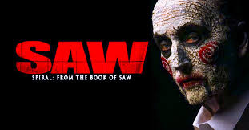

SAW
Saw IMDb 7,6/10 Rotten Tomatoes 49% Saw is a 2004 American horror film directed by James Wan and written by Leigh Whannell from a story by Wan and Whannell. It stars Whannell, Cary Elwes, Danny Glover, Monica Potter, Michael Emerson, Ken Leung, and Tobin Bell. It is the first installment in t… IMDb Wikipedia Official site Facebook Release date: 29 Oct 2004 (United States) Director: James Wan Language: English Summary: 2004 · 1hr 43min · Mystery/Horror Awards: Pegasus Audience Award (2005) Costume designer: Jennifer L. Soulages